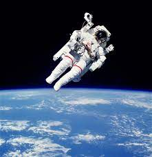

Bob conduct experiments and gather information while in space flight, including on the International Space Station. They also conduct experiments with the spacecraft itself to develop new concepts in design, engineering, and the navigation of a vehicle outside the Earth's atmosphere.
 Go to Index